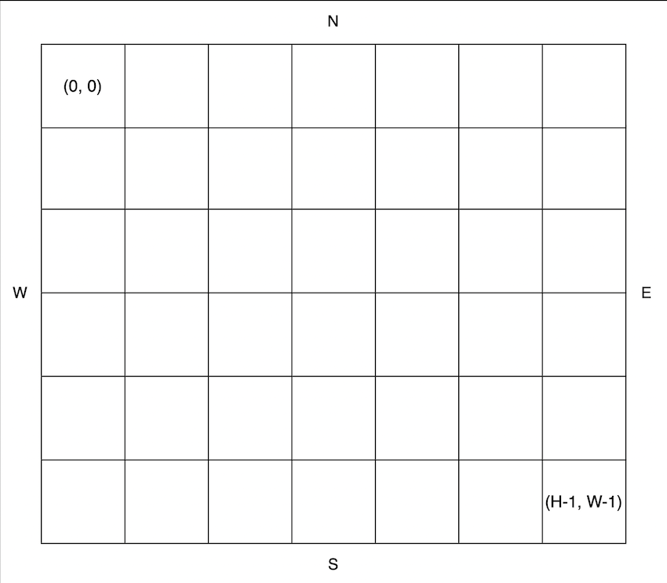

지나다니는 길을 'O', 장애물을 'X'로 나타낸 직사각형 격자 모양의 공원에서 로봇 강아지가 산책을 하려합니다. 산책은 로봇 강아지에 미리 입력된 명령에 따라 진행하며, 명령은 다음과 같은 형식으로 주어집니다.
예를 들어 "E 5"는 로봇 강아지가 현재 위치에서 동쪽으로 5칸 이동했다는 의미입니다. 로봇 강아지는 명령을 수행하기 전에 다음 두 가지를 먼저 확인합니다.
위 두 가지중 어느 하나라도 해당된다면, 로봇 강아지는 해당 명령을 무시하고 다음 명령을 수행합니다.
공원의 가로 길이가 W, 세로 길이가 H라고 할 때, 공원의 좌측 상단의 좌표는 (0, 0), 우측 하단의 좌표는 (H - 1, W - 1) 입니다.

공원을 나타내는 문자열 배열 park, 로봇 강아지가 수행할 명령이 담긴 문자열 배열 routes가 매개변수로 주어질 때, 로봇 강아지가 모든 명령을 수행 후 놓인 위치를 [세로 방향 좌표, 가로 방향 좌표] 순으로 배열에 담아 return 하도록 solution 함수를 완성해주세요.
| park | routes | result |
| ["SOO","OOO","OOO"] | ["E 2","S 2","W 1"] | [2,1] |
| ["SOO","OXX","OOO"] | ["E 2","S 2","W 1"] | [0,1] |
| ["OSO","OOO","OXO","OOO"] | ["E 2","S 3","W 1"] | [0,0] |
입력된 명령대로 동쪽으로 2칸, 남쪽으로 2칸, 서쪽으로 1칸 이동하면 [0,0] -> [0,2] -> [2,2] -> [2,1]이 됩니다.
입출력 예 #2입력된 명령대로라면 동쪽으로 2칸, 남쪽으로 2칸, 서쪽으로 1칸 이동해야하지만 남쪽으로 2칸 이동할 때 장애물이 있는 칸을 지나기 때문에 해당 명령을 제외한 명령들만 따릅니다. 결과적으로는 [0,0] -> [0,2] -> [0,1]이 됩니다.
입출력 예 #3처음 입력된 명령은 공원을 나가게 되고 두 번째로 입력된 명령 또한 장애물을 지나가게 되므로 두 입력은 제외한 세 번째 명령만 따르므로 결과는 다음과 같습니다. [0,1] -> [0,0]